Project 4: Neural Radiance Field (NeRF)
In this project, I implemented a basic version of Neural Radiance Fields (NeRF) to generate novel views of 3D scenes from a set of 2D images.
Part 0: Calibrating the Camera and 3D Scanning
To start, I took over 30 images from varying distances and angles of AruCo markers to calibrate my camera using OpenCV. I used cv2.calibrateCamera() to compute the camera intrinsics, and cv2.solvePnP() to estimate the camera pose for each image.
Here's an example of one of the calibration images, as well as the intrinsics I calculated:
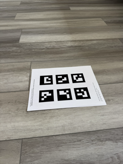
Camera Calibration Image
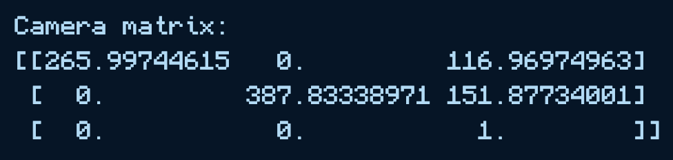
Camera Intrinsics
Once my camera was calibrated, I took 40 images of my penguin Pengy from varying angles and distances.
For each image, I calculated the camera pose using the AruCo markers as reference points.
I was able to visualize the pose estimations by displaying a camera frustum in 3D with viser:
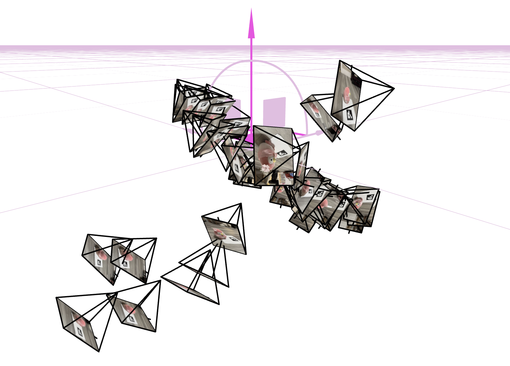
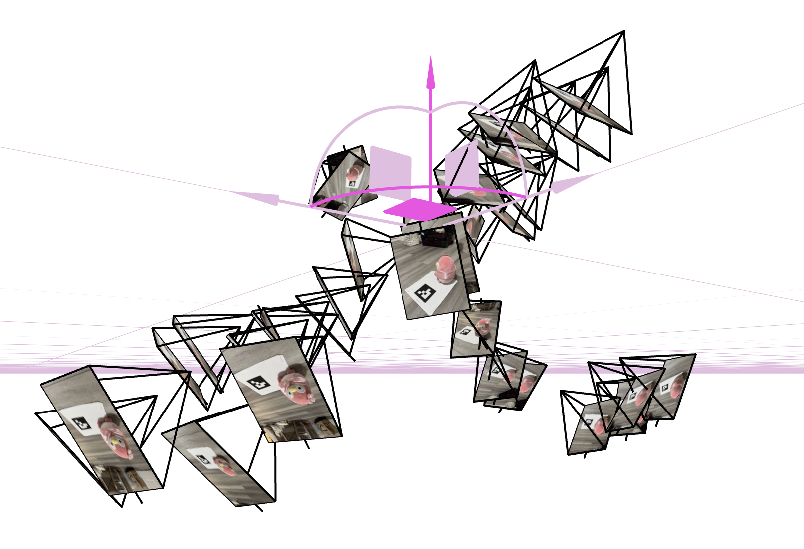
Part 1: Fitting a Neural Field to a 2D image
To begin, I created a simple Multilayer Perceptron (MLP) network with Sinusoidal Positional Encoding (PE)
that takes 2-dimensional coordinates as input and outputs RGB color values. Here's the structure of the 2D model
I implemented using PyTorch:

Basic MLP Structure
The model architecture has 4 layers, with 256 hidden units per layer. I found that for the PE, L=10 levels was a good amount.
I used a learning rate of 1e-2 and trained the model for 1600 iterations using the Adam optimizer.
Here's how the model performed at different iterations for an example image of a fox:
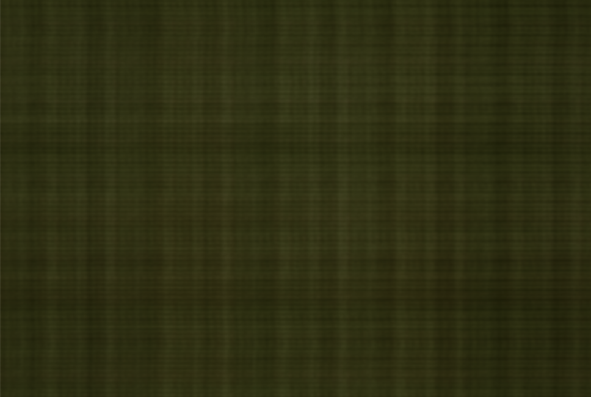
0 Iterations
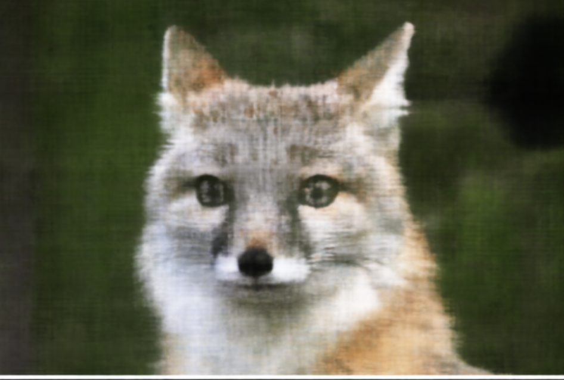
400 Iterations
800 Iterations
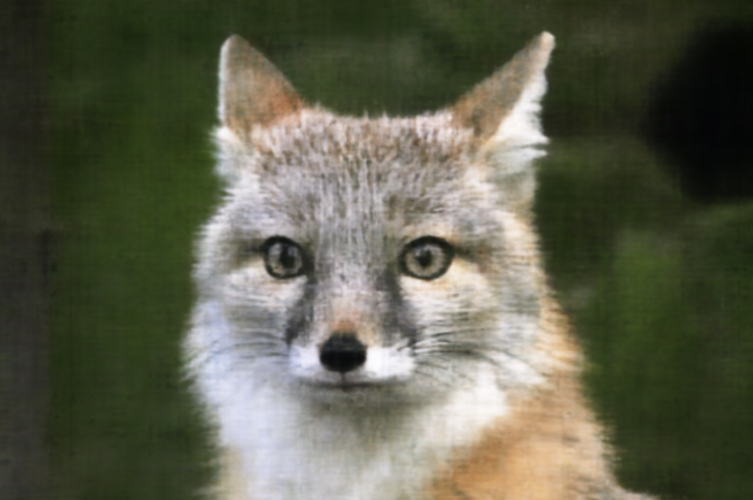
1400 Iterations
Original Fox Image
I also tweaked with the hyperparameters for max positional encoding levels and width of the hidden layers. Here's some results from those experiments:
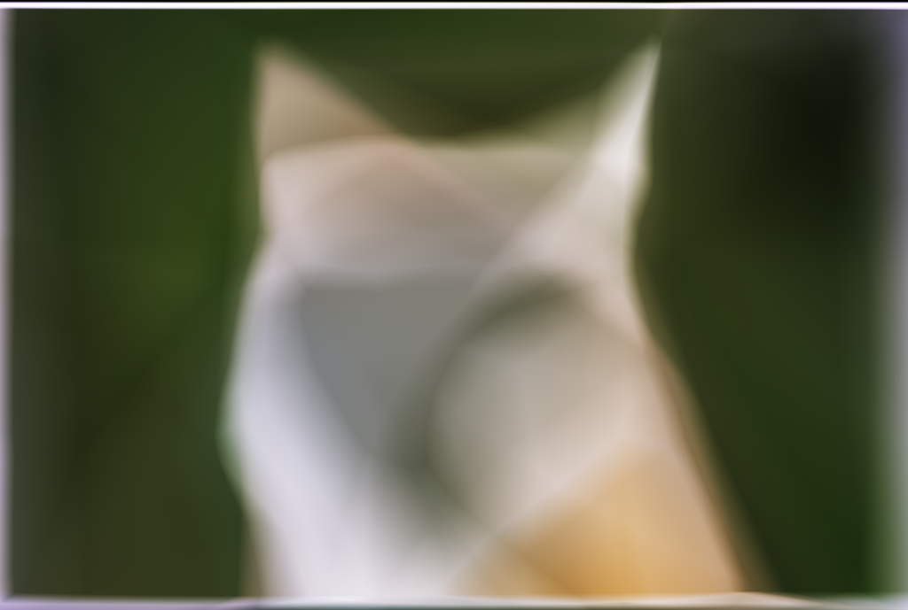
PE = 2, Layer Width = 64
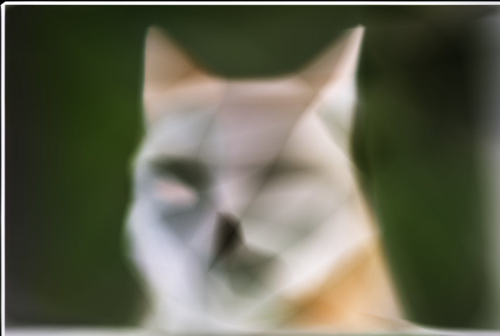
PE = 2, Layer Width = 128
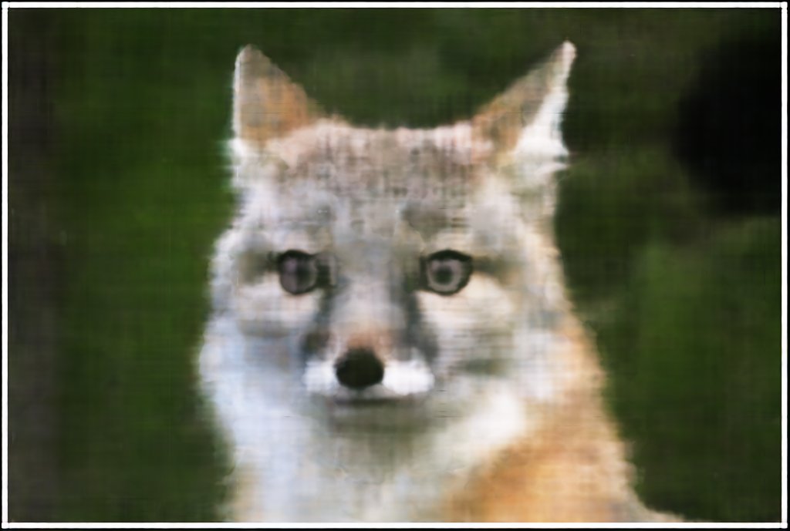
PE = 10, Layer Width = 64
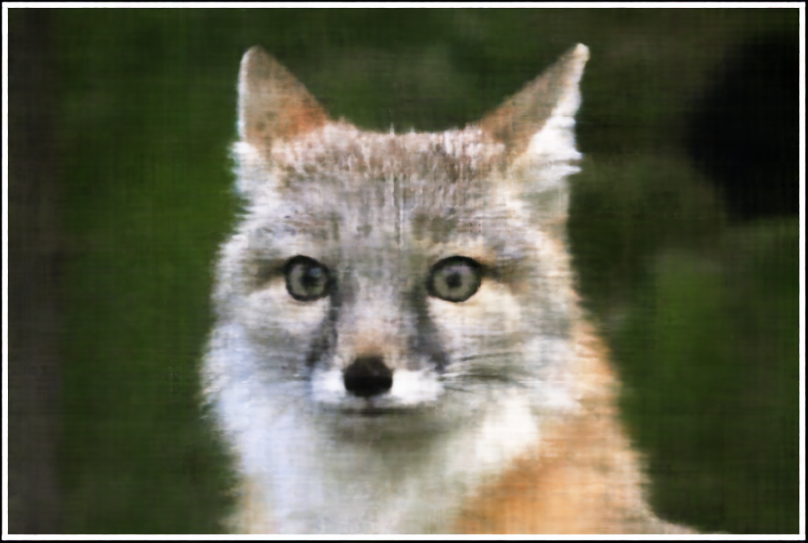
PE = 10, Layer Width = 128
A PE level of 10 and a higher layer width seemed to give the best results overall. I used 256 hidden units for my MLP.
Here's the training progression for one of my own images of Yosemite's Nevada Falls:
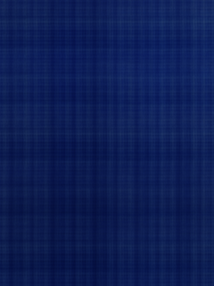
0 Iterations
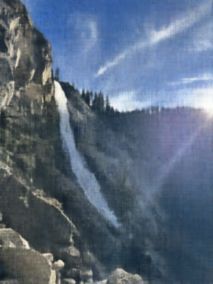
400 Iterations
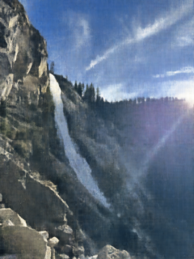
800 Iterations
1400 Iterations
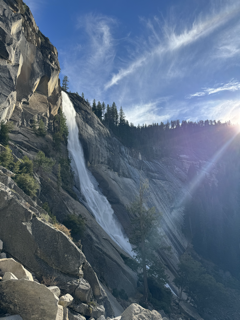
Original Yosemite Image
And here's the PSNR curve over the 1600 training iterations for the Yosemite images:
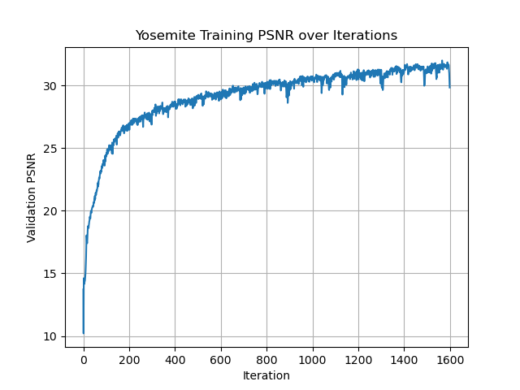
Yosemite Training PSNR Curve
Part 2: Fit a Neural Radiance Field from Multi-view Images
Finally, I was able to put everything together to create a NeRF representing a 3D image. I'll go through how I did it step-by-step,
as well as showing an example using the Lego dataset from the original NeRF paper.
Part 2.1: Creating Rays from Cameras
To start, I implemented some methods to create rays from the camera intrinsics and extrinsics.
The first one was Camera to World Coordinate conversion, which converts camera coords to world coords using the inverse of the camera extrinsics matrix.
Next, I implemented Pixel to Camera coordinate conversion using the intrinsics matrix K. This converts pixel coordinates (u, v) to camera coordinates (x, y, z).
Finally, I implemented Pixel to Ray conversion, which combines the previous two methods to generate rays in world coordinates for each pixel in the image.
To calculate the ray direction for pixel, we can simply choose a point along this ray with
depth equal to 1 (s=1) and find its coordinate in world space. Then the normalized ray direction can be computed by:

Where the camera origin r_o is simply the translation component of the camera extrinsics matrix.
Part 2.2: Sampling
I implemented sampling rays from images by randomly selecting pixels from the images and converting them to rays. Since pixels are measured at the corners, not in the middle,
I added 0.5 to the pixel coordinates when sampling.
This method is helpful for training the NeRF model using mini-batches of rays.
Additionally, I implemented sampling points along rays, which samples 3D points along a ray at regular intervals between a near and far distance (typically 2.0 and 6.0).
Optionally, I added small random perturbations to the sample positions to improve training.
Part 2.3: Putting the Dataloading All Together
I wrote a dataloader that randomly samples pixels from images and converts them to rays, then samples points along those rays.
Here are a couple of visualizations showing sampled rays for cameras in the Lego dataset:
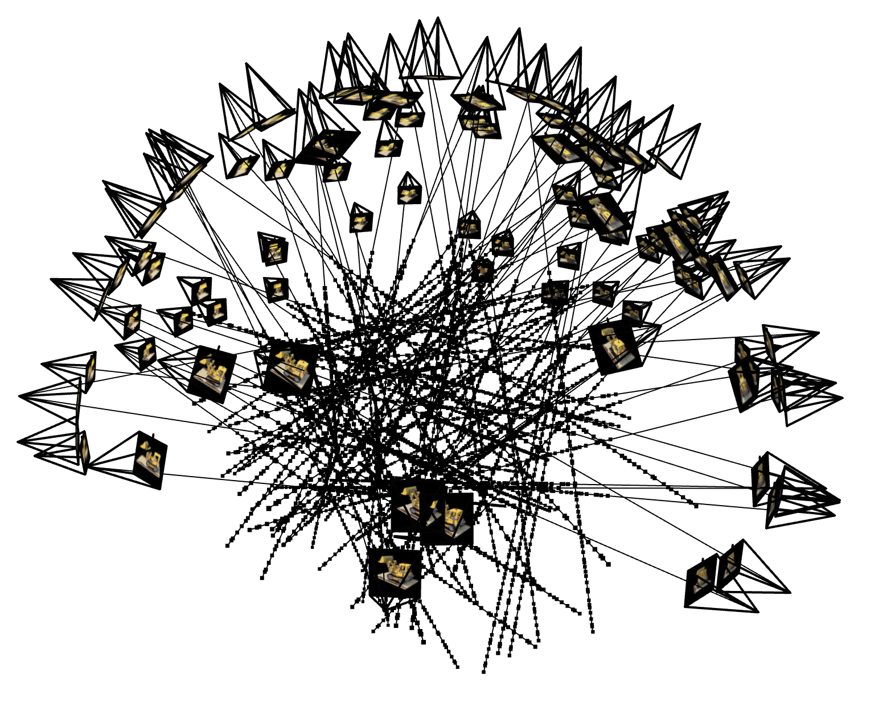
All cameras with samples
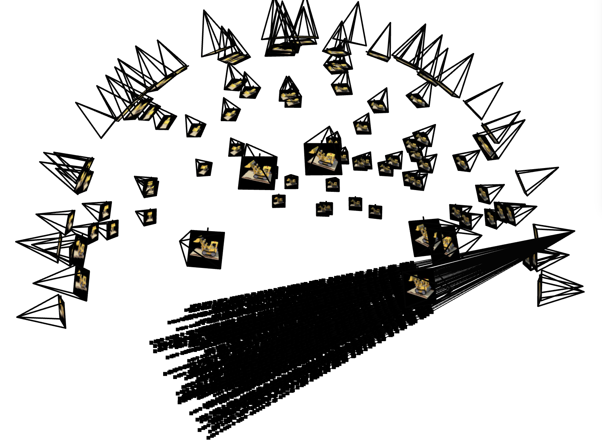
Single camera with 100 samples
Part 2.4: Creating the NeRF Model
Now that we are able to sample 3D points along rays, we want to use the network to predict color and density values for those points.
I created an MLP similar to part 1, but with some changes:
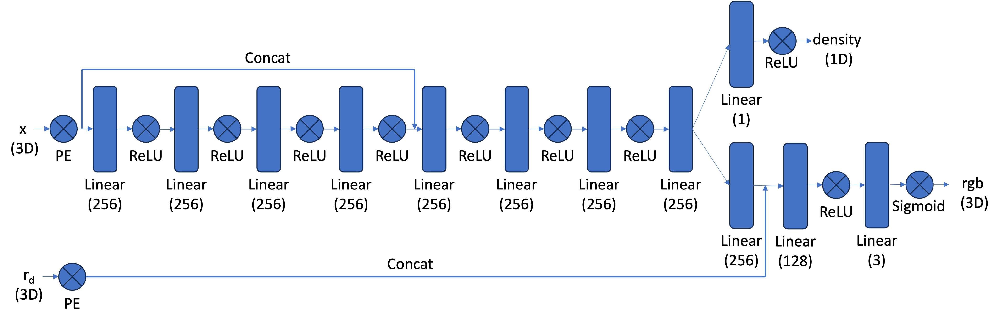
NeRF MLP Structure
The model starts with 8 layers with 256 hidden units per layer. The input is 3D coordinates with L=10 levels of positional encoding.
The output is a density value and RGB color for each point. After the first 8 layers, the network branches into two heads: one for density and one for color.
The color head takes in the viewing direction (also with positional encoding, L=4)
Part 2.5: Volume Rendering
With the NeRF model implemented, I can now predict color and density values for sampled points along rays.
To render an image, I need to perform volume rendering by integrating these values along each ray. The volume rendering equation is as follows:
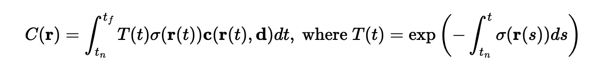
The discrete approximation that I computed using code is:
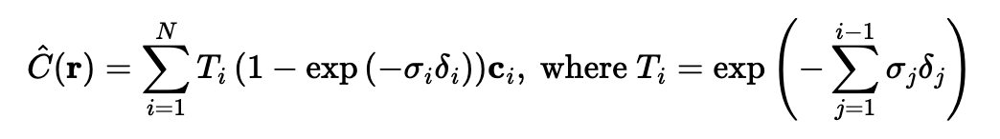
For each ray, I compute the color contribution from each sampled point using the predicted color and density values.
The final pixel color is obtained by accumulating these contributions along the ray, taking into account the transmittance (how much light reaches each point without being occluded).
Using this, I was able to optimize my model to fit on the lego dataset. Here are some rendered images at different training iterations:
0 Iterations
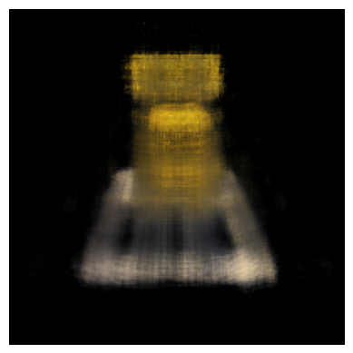
200 Iterations
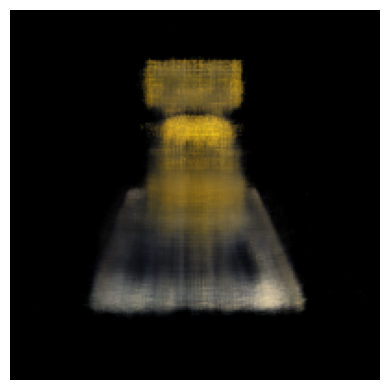
400 Iterations
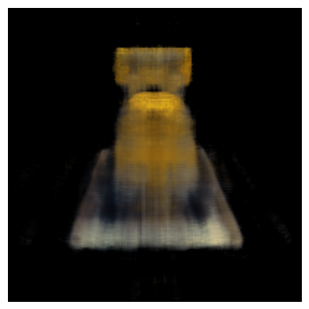
800 Iterations
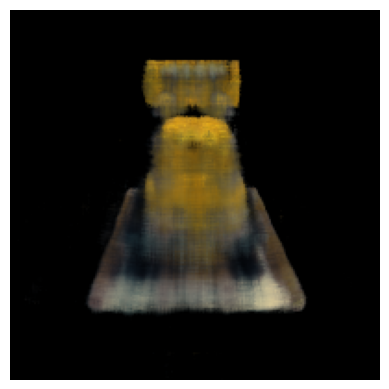
1200 Iterations
1600 Iterations
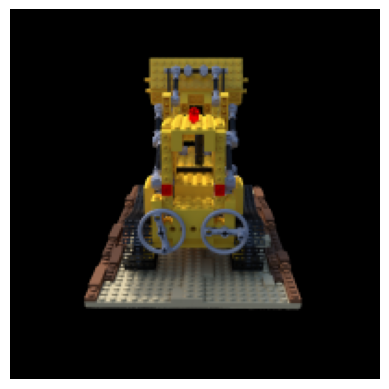
Original Image
Here's the PSNR curve on the validation set over 2000 training iterations:
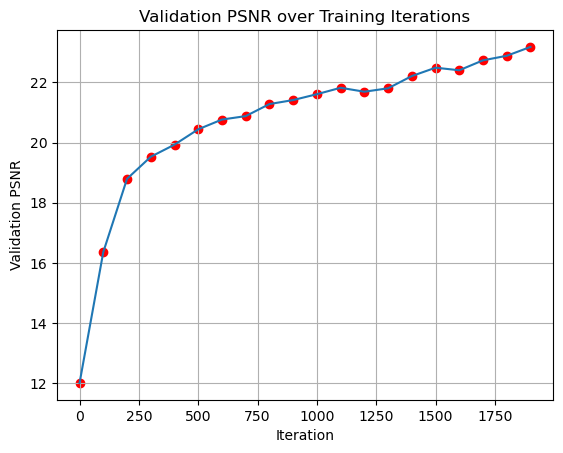
Lego Validation PSNR
So cool! We can finally put everything together to render novel views of our own 3D scene. After training for 2000 iterations on the lego dataset, here are my results using the test c2ws:
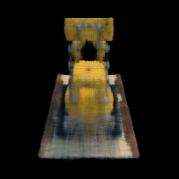
Part 2.6: Training with more data
I started by training my NeRF model on the Lafufu dataset. Here are some of the intermediate renders of the scene while training:
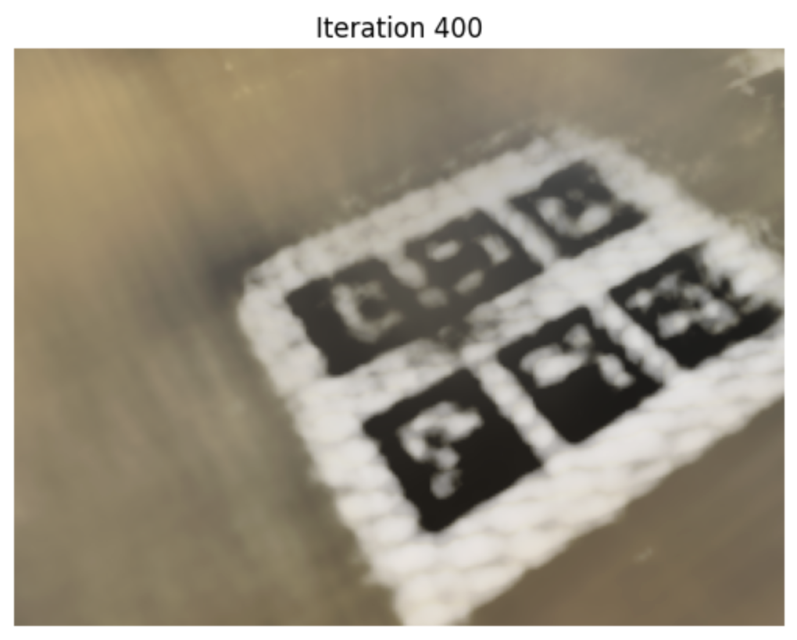
400 Iterations
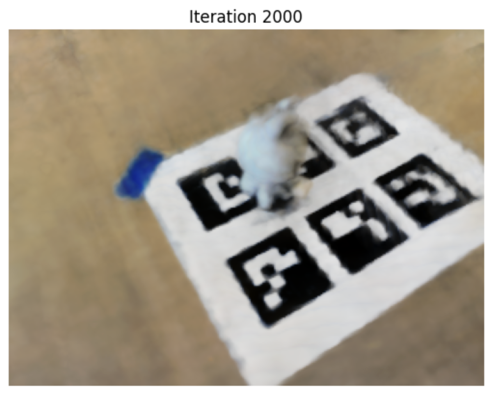
2000 Iterations
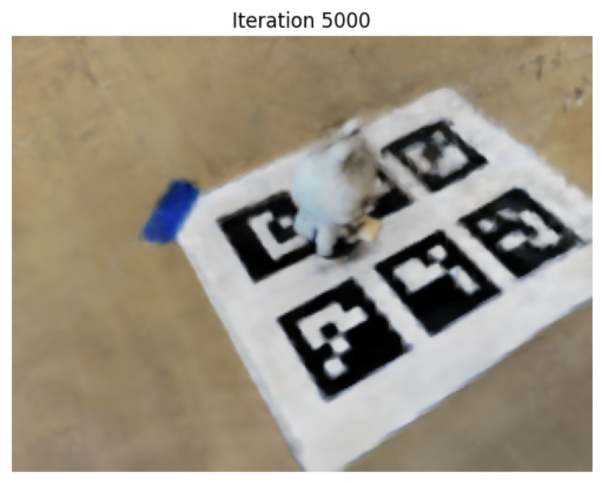
5000 Iterations
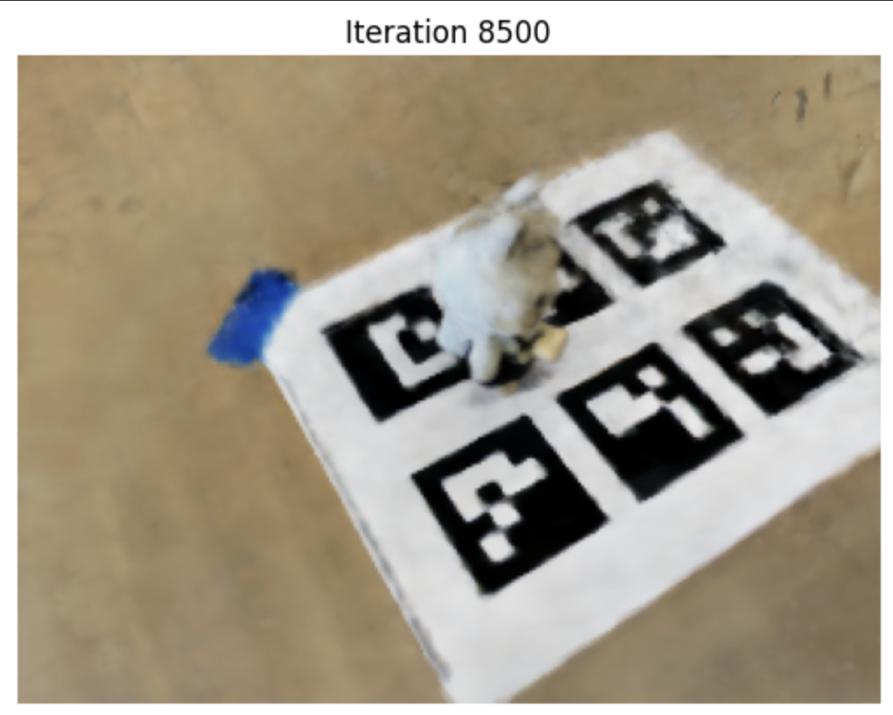
8500 Iterations
I trained for 10000 iterations with the following parameters:
- Learning rate: 5e-4
- Sample Batch Size: 10000 rays
- Samples per ray: 64
- Near/Far bounds: 0.02 and 0.5
This worked out pretty well! Here's a gif of the novel view for the Lafufu dataset, as well as the training PSNR curve:
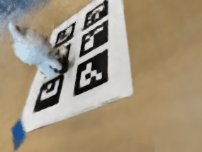
Lafufu Novel View
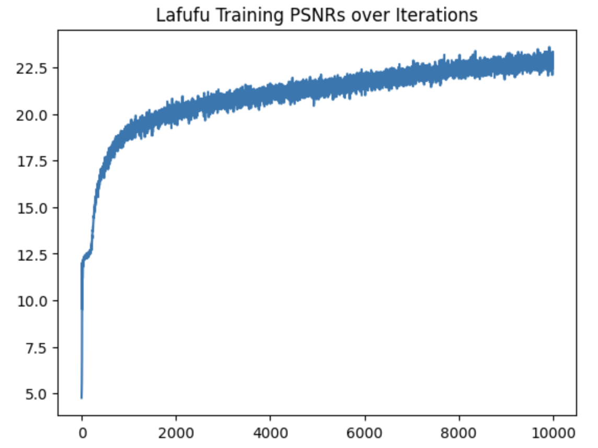
Training PSNR Curve
Finally, I trained my NeRF model on my own dataset of Pengy the penguin using the same methods as above.
Here are the parameters I used:
- Learning rate: 5e-4
- Sample Batch Size: 10000 rays
- Samples per ray: 64
- Near/Far bounds: 0.02 and 0.6
After training for 10000 iterations, here are some intermediate renders of Pengy during training, as well as a gif of the novel view:
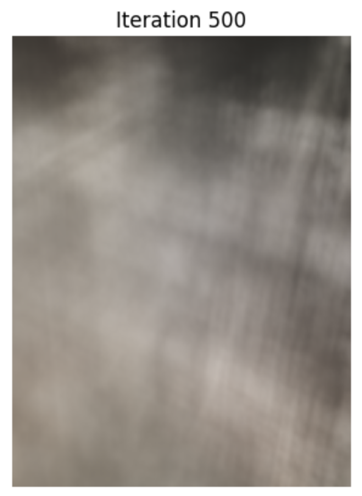
500 Iterations
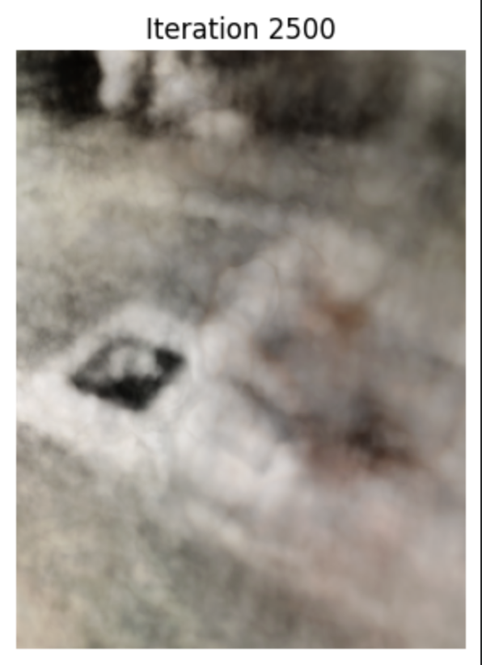
2500 Iterations
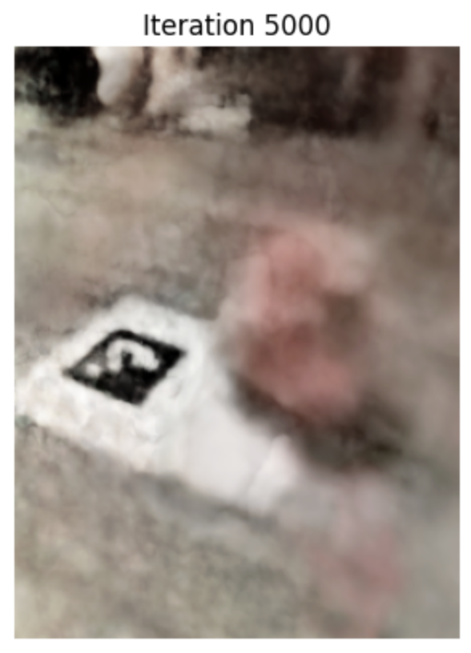
5000 Iterations
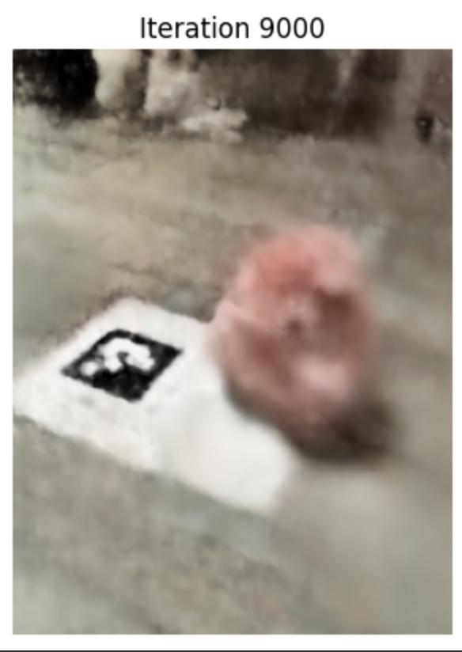
9000 Iterations
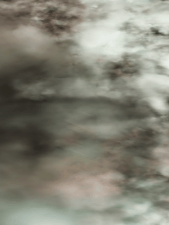
Pengy Novel View
It looks like we could have tweaked parameters a bit more to get a better result, but overall I'm happy with how it turned out with the time that I had! Here's the final training PNSR curve for the Pengy dataset:
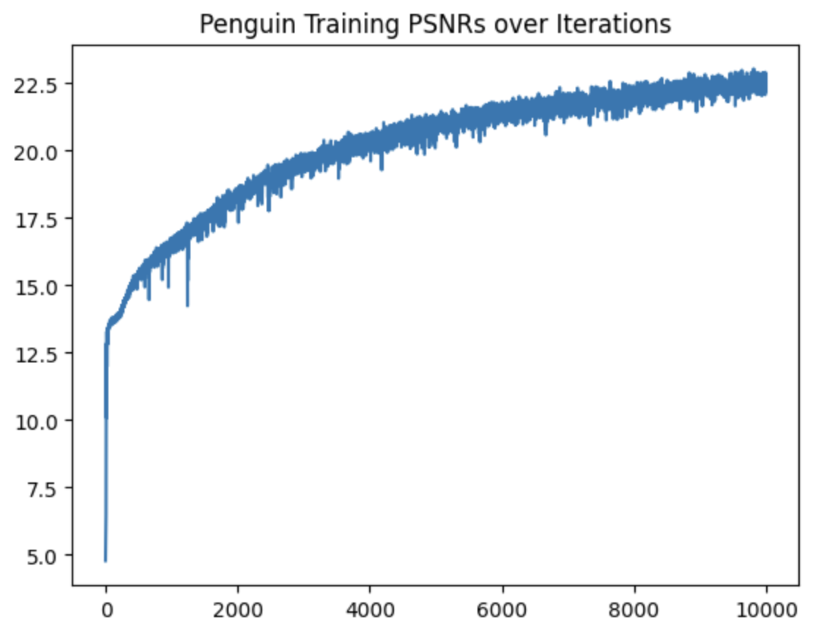
Pengy Training PSNR Curve